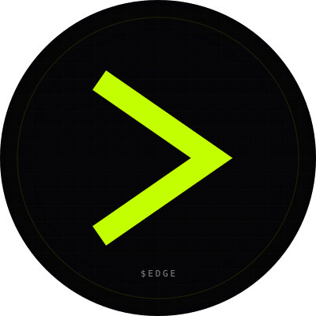
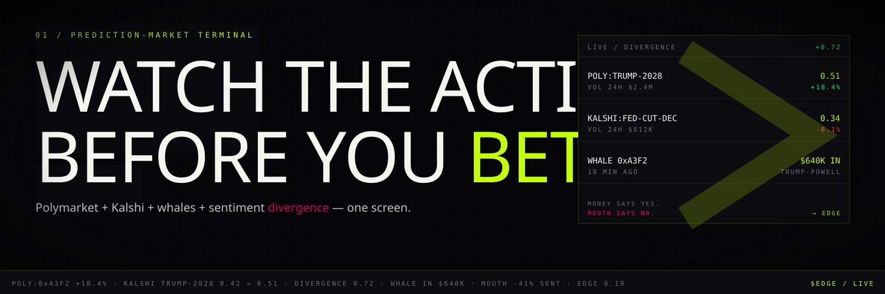

03.01 / Social Asset Pack · X (Twitter)
X / Twitter.
Flagship public surface. 400×400 PFP, 1500×500 banner, 160-char bio, 6-tweet pinned thread. Voice: degen-confident, data-grounded. Mute everything else.
Profile Picture
03.01.01 · 400×400 · circle-clipped

400 × 400 · SVG (square source)
400 × 400 · circle-clipped (as X renders it)
Header
03.01.02 · 1500×500

1500 × 500 · SVG
Bio Copy
03.01.03 · 160 char max
Primary · 160 char
Bio
The terminal for prediction markets. Money (whales) · Mouth (sentiment) · Edge (the gap). Polymarket + Kalshi + Twitter in one screen.
Alt · punchier
Bio · v2
Watch the action. Before you bet. Polymarket + Kalshi + whales + sentiment divergence, one screen.
Pinned Thread · 6 tweets
03.01.04
$EDGE is the terminal for prediction markets.
Money. Mouth. Edge.
Polymarket and Kalshi tell you where the money is.
Twitter tells you what the mouth is saying.
$EDGE shows you the gap between them.
That gap is where you bet.
edge-two-psi.vercel.app
The five pillars:
1. Every Polymarket + Kalshi market in one grid. Sortable, filterable, live.
2. Whale tracker. The same $40K wallet that hit Trump-Powell in 18 minutes? You see them next time, in real time.
(3, 4, 5 below)
3. Sentiment radar. We score X chatter against on-chain flow.
4. Picker algorithm with a public track record. No vibes, just hit-rate.
5. A feed built around the action — not your group chat.
One screen. No tabs. No tab-hopping.
Today's reading:
POLY TRUMP-2028 0.51
KALSHI TRUMP-2028 0.42
DIVERGENCE +0.09
Mouth on X: -41% sentiment toward Trump in last 6h.
Money flowing IN: $640K whale 18 min ago.
Mouth says no. Money says yes.
That's the edge.
Prediction markets are the closest thing to a truth machine the internet has built.
In 2024 they out-called every pollster.
In 2026 the volume is 10x what it was.
In 2028 they're the source.
We're building the Bloomberg for that world. Get in before it's obvious.
$EDGE is launching on @pumpdotfun (Solana).
Holders get:
• terminal access tiers
• whale-alert webhooks
• divergence push notifications
• gated rooms with the brand-account team
Follow. Mute everything else.
Site: edge-two-psi.vercel.app
CA: drops at launch.
Setup Notes
03.01.05
Upload
pfp.svg — X requires a raster file, so export the SVG to a 400×400 PNG first (use any browser screenshot or rasterize via inline SVG render). The square SVG is designed circle-safe: the chevron and corner tag sit inside a 178px safe radius.Upload
banner.svg exported at 1500×500 PNG. The top ~60px and bottom ~80px can be clipped on mobile / desktop edge cases; the headline + ticker are designed to survive both.Set bio from
bio.md (primary). Add website edge-two-psi.vercel.app. Display name: $EDGE. Handle: @edgeterminal.Post the 6 tweets in
pinned.md as a thread. Pin tweet #1. Wait 30 min, then quote-pin tweet #4 with that day's actual divergence reading.Turn on
highlights tab and add the pinned thread + the launch announcement once it ships.Profile color (X Premium): set to lime
#C4FF00. If the surface looks too aggressive, fall back to #FFB800 (amber) — never default blue.